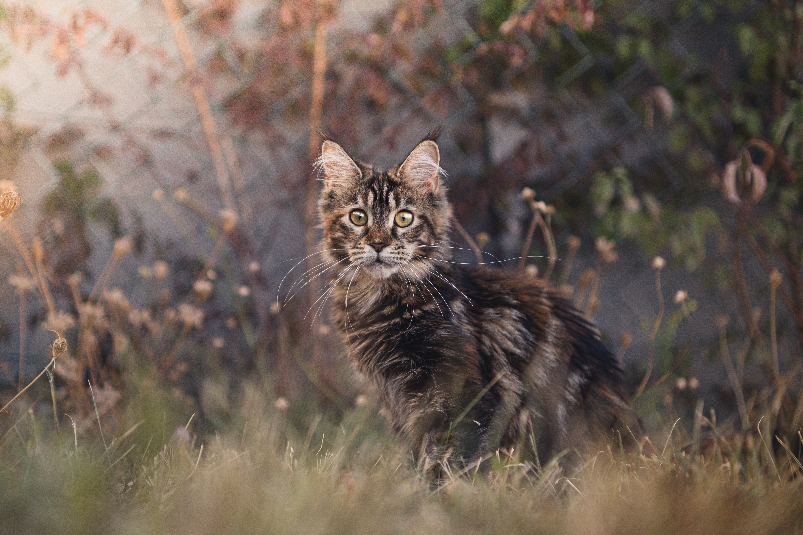

Le chat, un compagnon apprécié pour son caractère indépendant.
Le chat est un animal très répandu dans les foyers français. Sa popularité vient en partie de
son indépendance, appréciée par de nombreux propriétaires.
Quelques races courantes
Européen
Maine Coon

Le Maine Coon est un chat tres grand a poil long.
Siamois
Persan
Ragdoll
Chaque race possède des besoins spécifiques, notamment en matière d'entretien du pelage.
Comment choisir sa race
Évaluer le temps disponible pour l'entretien du pelage.
Vérifier la compatibilité avec d'autres animaux du foyer.
Consulter un éleveur ou un vétérinaire avant l'adoption.